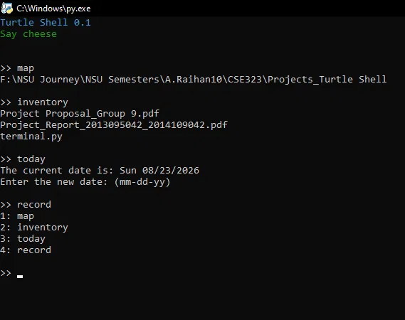

Writing a shell taught me what a shell actually does
Aug 15, 2026
I've typed into a terminal every day for years without ever really asking what happens between hitting Enter and getting an answer back. Turtle Shell started as an attempt to close that gap — a Unix-like shell, written in Python, with command history, navigation, and error handling, built from nothing but the standard library and a lot of trial and error.
The commands themselves — mapping a directory, listing files, tracking a history log — were the easy part. What actually ate my time was error handling, and specifically how much I'd underestimated it. "Handle errors gracefully" sounds like a checkbox until you're the one deciding what should happen when someone asks for a file that doesn't exist, or types a command that's almost right but not quite, or feeds the shell an empty string. Every one of those is a small design decision, and a real shell makes hundreds of them without you ever noticing.

A real session — mapping a directory, checking inventory, logging today's date, and reviewing command history.
That screenshot is an actual session, not a staged demo — map to locate the working directory, inventory to list what's in it, today to check and set the date, record to pull up the command history. Small utilities, but each one forced me to think about state: what the shell remembers between commands, what it forgets, and what it should never silently get wrong.
It's the smallest project of the three I've written about here, and probably the one I reach for the most, because it's not a demo — it's a tool I actually use. That's a different kind of finished than "the model hit its target metric."